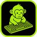

01
Cartoon
animated series · in developmentUsing hermes agent to stand up a server and rent gpu to download minimax h3 and locally generate videos.
Formatanimated series
Theme"No Cap"
StatusWriting the pilot
Everything that isn't wood — a cartoon, a garden, and whatever else I'm deep-diving on this month.
Using hermes agent to stand up a server and rent gpu to download minimax h3 and locally generate videos.

Built a native macOS app shell around yt-dlp — the powerful open-source video downloader that handles YouTube and hundreds of other sites. Wraps the CLI in a clean GUI so there's no terminal or flags required.
The longest-running project and the only one with an adversary. Four beds of heirlooms against one bold squirrel; the current score stands 14–2 in the gardener's favor, pending appeal.
August is the payoff: most dinners are a tomato eaten standing over the bed, still warm from the sun. 10/10, would feud again.